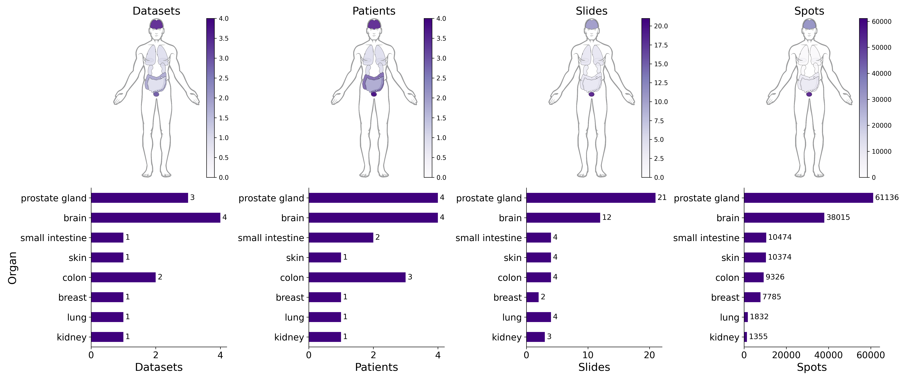
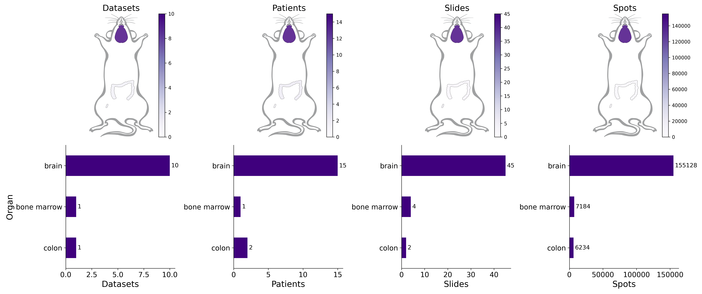

SpaRED
Database Metadata
People
Details
Dataset Filtering
Dataset Processing
SpaRED
Spatially Resolved Expression Database
General SpaRED Statistics in Human Data

General SpaRED Statistics in Mouse Data
